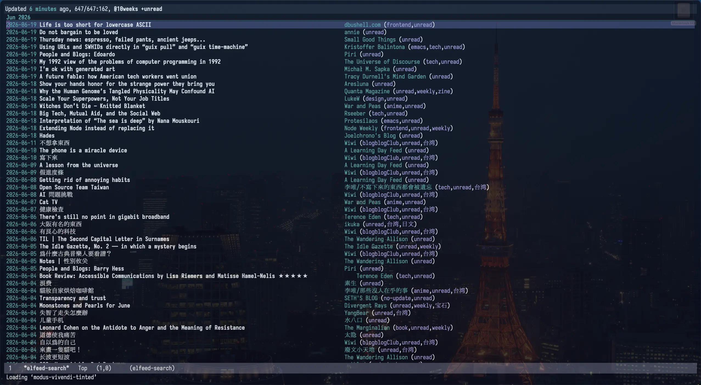
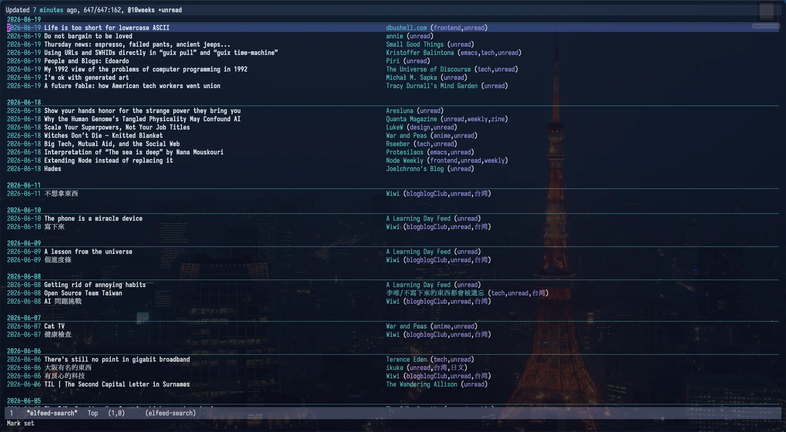
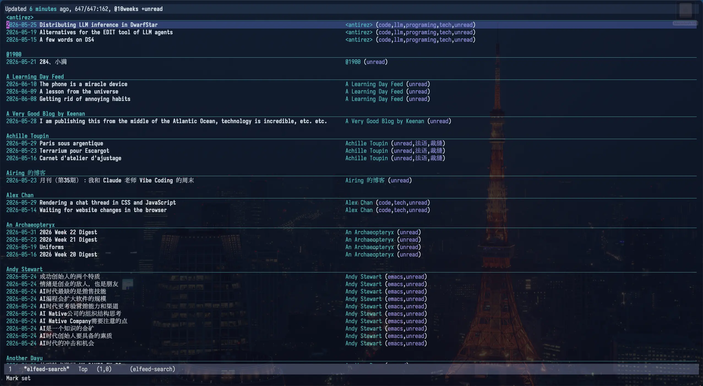
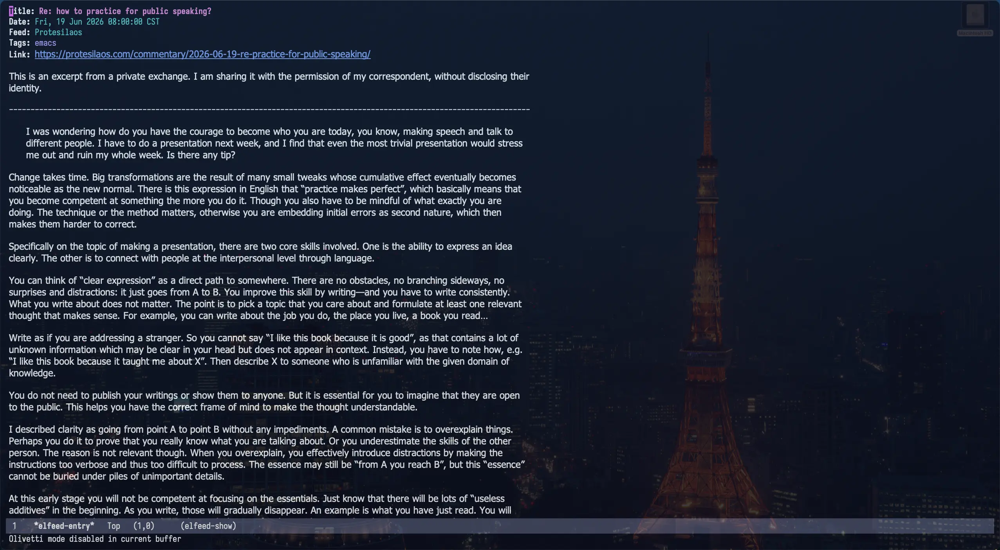
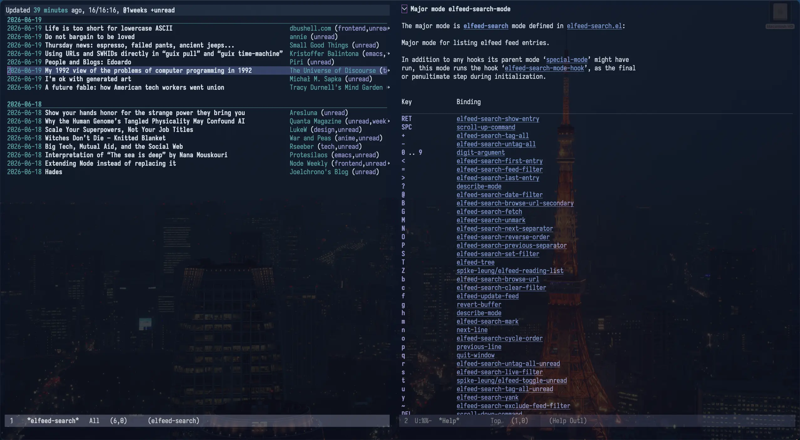
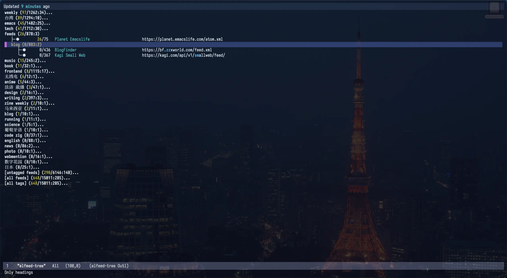
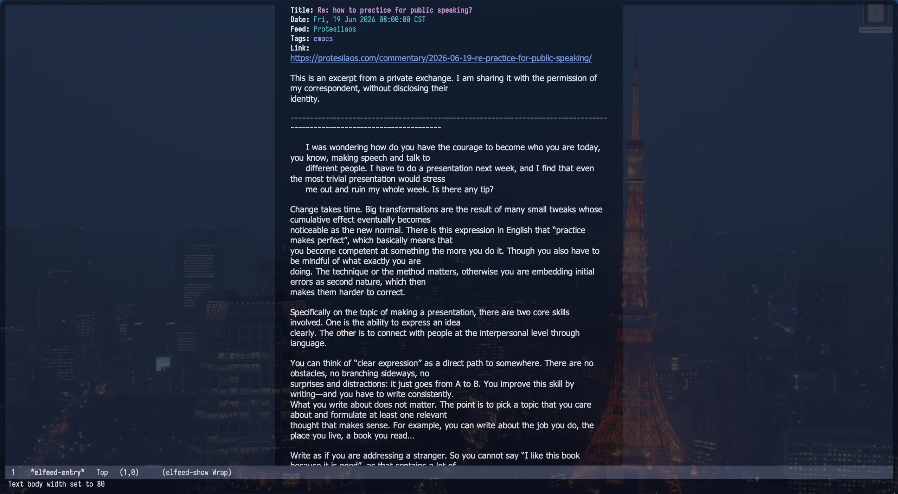

Elfeed 4.0.0 使用分享
Elfeed 是一個 Emacs 里的 RSS 閲讀器，關於 Elfeed 之前寫過一篇 在 Emacs 中用 Elfeed 阅读订阅流，那篇文章没怎麼展示 Elfeed 的使用，更多還是在分享一些工具函数。前陣子 Elfeed 也更新到了 4.0.0，新增了很多方便的功能，我最近也用的很多，所以再分享一下它的使用，或許你會想嘗試一下它。
為了更直觀了解，我录󠄃了個視頻，也可以看看：
- YouTube: Elfeed 4.0.0 使用分享
- Bilibili: Elfeed 4.0.0 使用分享
有點囉嗦，推薦 1.5 倍速看。
視頻演示中的配置
(defconst *is-a-mac* (eq system-type 'darwin))
;;; 设置 mac 的快捷键
(when *is-a-mac*
(setq mac-command-modifier 'meta
mac-option-modifier 'super))
;;; 設置默認字體大小
(set-face-attribute 'default nil :height 250)
;;; 添加 package 的下載仓庫，melpa 上有更多的擴展
(require 'package)
(add-to-list 'package-archives '("melpa" . "https://melpa.org/packages/") t)
(add-to-list 'package-unsigned-archives "melpa")
;;; 調整 elfeed 数据庫的目录󠄃位置
(setq elfeed-db-directory "~/Downloads/emacs-config/.elfeed")
;;; 添加訂閱流
(setq elfeed-feeds
'(("https://taxodium.ink/rss.xml" :title "Taxodium" emacs zine)
("https://kagi.com/api/v1/smallweb/feed/" :title "Kagi Small Web" )
("https://bf.zzxworld.com/feed.xml" :title "BlogFinder" :no-update t :fetch-link t feeds )))
;;; 設置 *elfeed-search* 頁面的時間格式，會影响分組的展示
(setq elfeed-search-separator-date-format "%Y-%m-%d")
;;; 設置默認的過濾条件
(setq-default elfeed-search-filter "@1weeks +unread")
;;; 拉取新条目時，將一個月前的自動標記為己讀
(add-hook 'elfeed-new-entry-hook
(elfeed-make-tagger :before "1 months ago"
:remove 'unread))
;;; 閱讀時開啟 `olivetti-mode'，讓內容居中展示
(defun spike-leung/preview-elfeed-with-olivetti ()
"Preview elfeed with `olivetti-mode'."
(olivetti-mode)
(olivetti-set-width 80)
(visual-line-mode))
(add-hook 'elfeed-show-mode-hook #'spike-leung/preview-elfeed-with-olivetti)
;; 增強自動補全
(use-package vertico
:init
(vertico-mode))
;; 允許補全關鍵字无序
(use-package orderless
:custom
;; Configure a custom style dispatcher (see the Consult wiki)
;; (orderless-style-dispatchers '(+orderless-consult-dispatch orderless-affix-dispatch))
;; (orderless-component-separator #'orderless-escapable-split-on-space)
(completion-styles '(orderless basic))
(completion-category-overrides '((file (styles partial-completion))))
(completion-category-defaults nil) ;; Disable defaults, use our settings
(completion-pcm-leading-wildcard t)) ;; Emacs 31: partial-completion behaves like substring
;;; 讓補全顯示注解 (annotation)
(use-package marginalia
;; Bind `marginalia-cycle' locally in the minibuffer. To make the binding
;; available in the *Completions* buffer, add it to the
;; `completion-list-mode-map'.
:bind (:map minibuffer-local-map
("M-A" . marginalia-cycle))
;; The :init section is always executed.
:init
;; Marginalia must be activated in the :init section of use-package such that
;; the mode gets enabled right away. Note that this forces loading the
;; package.
(marginalia-mode))
(custom-set-variables
;; custom-set-variables was added by Custom.
;; If you edit it by hand, you could mess it up, so be careful.
;; Your init file should contain only one such instance.
;; If there is more than one, they won't work right.
'(package-selected-packages '(elfeed marginalia olivetti orderless vertico)))
(custom-set-faces
;; custom-set-faces was added by Custom.
;; If you edit it by hand, you could mess it up, so be careful.
;; Your init file should contain only one such instance.
;; If there is more than one, they won't work right.
)
安装
Elfeed 運行在 Emacs 中，關於 Emacs 的安装1 和使用這里就不贅述了，之前可以參考之前寫的 如何上手 Emacs。我想說的是，Emacs 安装和簡单使用并不難， Emacs 也有圖形界面，也可以通過鼠標完成大部分常用操作，不必看到 Emacs 就望而止步。不過請至少閲讀一遍 Emacs tutorial，下面的安装我會假設你己經讀過一遍了。
Elfeed 的安装參考 Elfeed 的 README，大致這几步:
- 执行
M-x package-install，輪入elfeed进行安装 配置 Elfeed，可以寫在
~/.emacs.d/init.elEmacs 的配置一般寫在
~/.emacs.d/init.el，取决於的操作系統路徑可能有差异。(setq elfeed-feeds '("https://taxodium.ink/rss.xml" "https://kagi.com/api/v1/smallweb/feed/"))- 执行
M-x load-file，輪入~/.emacs.d/init.el，讓 Emacs 加載init.el里的配置
這樣就安装好了，之後可以执行 M-x elfeed 打開 Elfeed 閲讀，执行 M-x elfeed-update 拉取訂閱流获取更新
(也可以在 Elfeed 的 buffer 按 G 触發)。
管理訂閱流
Elfeed 的訂閲流是在一個配置文件（例如 init.el ）中配置的， 格式如下：
(setq elfeed-feeds
'(("https://taxodium.ink/rss.xml" :title "Taxodium")
("https://protesilaos.com/master.xml" :title "Protesilaos" emacs)
("https://www.stefanjudis.com/rss.xml" :title "Stefan Judis" weekly frontend)
("https://bf.zzxworld.com/feed.xml" :title "BlogFinder" :no-update t :fetch-link t feeds blog)
("https://kagi.com/api/v1/smallweb/feed/" :title "Kagi Small Web" :no-update t :fetch-link t feeds blog)))
上面我添加了 5 条訂閱流，其中
:title可以指定顯示的名称。:no-update可以讓訂閱流默認不更新，需要手動去触發更新。有的訂閲流更新太多太頻繁，就可以讓它們默認不更新，什麼時候想看再用elfeed-update-feed手動触發更新。更好的補全
elfeed-update-feed支持自動補全，但默認的補全不是很好用。建議安装 minad/vertico 、oantolin/orderless、minad/marginalia 获得更好的補全。:fetch-link有的訂閲流只包含原文鏈接，設置:fetch-link可以自動拉取鏈接內容。- 剩下的
emacs、weekly等是標簽。 (添加標簽後，执行M-x elfeed-apply-autotags-now可以更新己有条目的標簽)
更多配置見 Elfeed 的 README。
可以看到這就是一些有一定格式的文本，很容易編輯、搜索，所有用於文本的編輯技巧都能用上，例如多指針編輯、正則替換等，比許多圖形介面要方便的多。
如果後面想換一個閱讀器，可以执行 M-x elfeed-export-opml 將所有訂閱流导出。
閱讀
执行 M-x elfeed 就可以打開 Elfeed 閱讀，在 Elfeed 的 buffer 按 G (elfeed-update) 触發更新
(那些設置了 :no-update t 的訂閱流不會被触發)。
默認視圖是按月份分組的。
{kind=link}

我更傾向於按天分組，可以在 init.el 中添加配置，設置默認按天分組：
(setq elfeed-search-separator-date-format "%Y-%m-%d")
{kind=link}

按下 o (elfeed-search-cycle-order) 可以切換分組模式，默認在按日期分組和按訂閱流分組之間切換。
{kind=link}

在条目上，按下 ENTER (elfeed-search-show-entry) 可以查看条目的文章內容，它是通過解析 XML 呈現的，不會加載 JS、CSS，只顯示 HTML 的內容，可以說很簡陋，但它也更干净，没有太多干擾。
{kind=link}

在条目上按下：
- b (
elfeed-search-browse-url) 可以用默認瀏覧器打開条目。 - r (
elfeed-search-untag-all-unread) 可以標記己讀， - u (
elfeed-search-untag-all-unread) 可以標記未讀。
更多可以參考 README，或者执行 M-x describe-mode 查看 elfeed-search-mode 的按鍵綁定。
{kind=link}

搜索過濾
在条目上按下：
- @ 可以基於条目的日期過濾，例如条目的日期是 2026-06-01，按下後就只顯示 2026-06-01 往後的条目。
- = 可以基於条目的訂閱流過濾，例如条目属於 taxodium.ink，按下後就只顯示属於 taxodium.ink 的条目。
- ~ 可以排除条目的訂閱流，例如条目属於 taxodium.ink，按下後就不會顯示属於 taxodium.ink 的条目。
在 Elfeed 的 buffer (*elfeed-search*) 上，按下 s (elfeed-search-live-filter) 可以輸入過濾條件實時過濾，可以按照日期、訂閱流名称、条目名称、標簽 (支持自動補全) 過濾，也支持設置排除条件，具體語法可以參考 Filter Syntax。
4.0.0 還增加了 Tree View，可以集中查看所有標簽，执行 M-x elfeed-tree 可以打開 Tree View 視圖。
{kind=link}

Tree View 的結构和標簽的位置有關：
("https://yhetil.org/emacs-devel/new.atom" emacs lists)emacs 會作為根節點，lists 是它下面的子節點。("https://yhetil.org/emacs-devel/new.atom" lists emacs)lists 會作為根節點，emacs 是它下面的子節點。
其它
默認過濾条件
默認過濾条件是 @6months +unread ，即近 6 個月未讀的条目，但我只想看最近一周，可以修改 elfeed-search-filter ：
(setq-default elfeed-search-filter "@1weeks +unread")
過濾條件語法參考 Filter Syntax。
將某個時間之前的条目自動標記己讀
新增訂閱流時，我可能只是想看作者的後續更新，有的訂閱流可能塞进了所有文章，就會一下子出現大量未讀条目。
我只想看最近一個月的，可以在拉取時讓 Elfeed 自動將一個月前的標記為己讀。
(add-hook 'elfeed-new-entry-hook
(elfeed-make-tagger :before "1 months ago"
:remove 'unread))
更多見 Tag Hooks。
在手機上閱讀
Elfeed 只能在 Emacs 中用，手機上沒装 Emacs 就用不了了。我的解决辦法是，先在電脑上打開 Elfeed，將想看的內空生成一份 HTML，放到一個 Web 服務器上供手機訪問。主要在無法用電脑時應付一下，更多時候我還是在電脑上閲讀。
优化閱讀體驗
我的顯示器比较寬，默認內容都在左側，閱讀起來不舒服。在閱讀時我會開啟󠄁 olivetti-mode 讓內容居中。
(defun spike-leung/preview-elfeed-with-olivetti ()
"Preview elfeed with `olivetti-mode'."
(olivetti-mode)
(olivetti-set-width 80)
(visual-line-mode))
(add-hook 'elfeed-show-mode-hook #'spike-leung/preview-elfeed-with-olivetti)
{kind=link}

脚注:
macOS 也可以從這兩個地方下載：